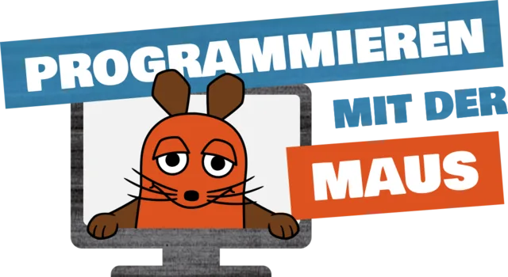
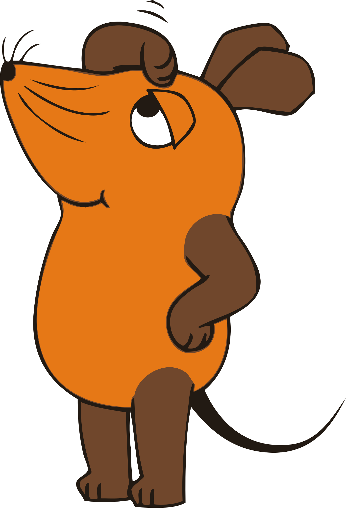

Hier wird gerade gebaut!
„Programmieren mit der Maus“ ist gerade nicht erreichbar, weil wir im Hintergrund daran arbeiten. Bald geht es weiter. Schau einfach etwas später noch einmal vorbei!
Bis dahin gibt es auf der Seite mit der Maus viel zu entdecken.
